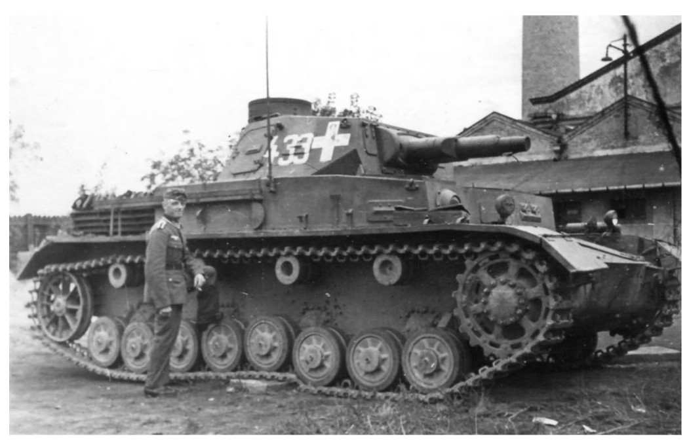
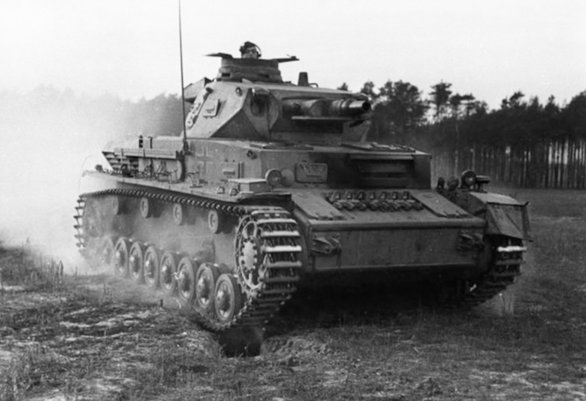
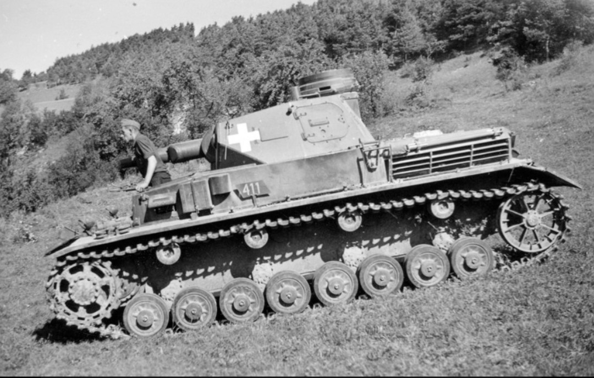
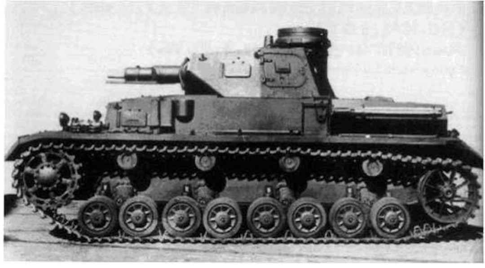
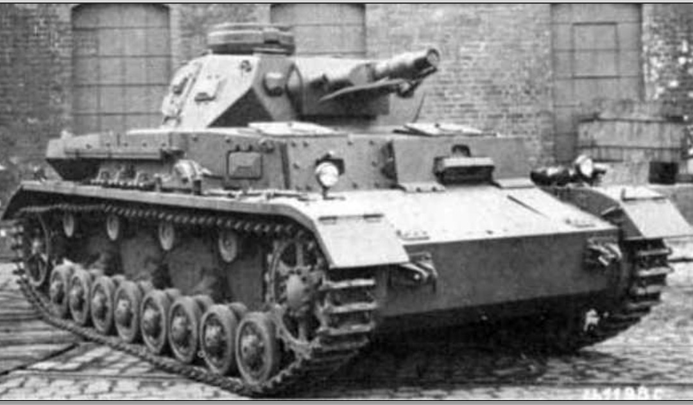
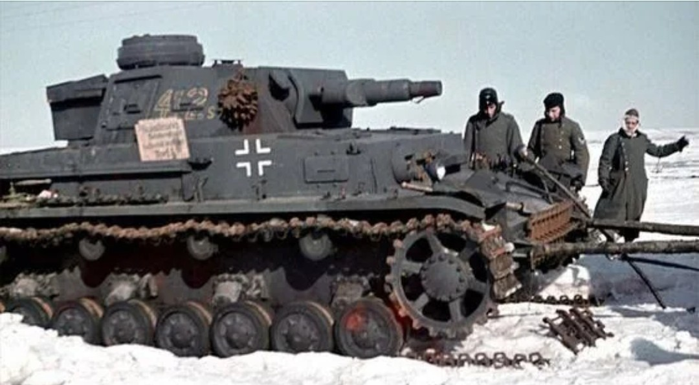
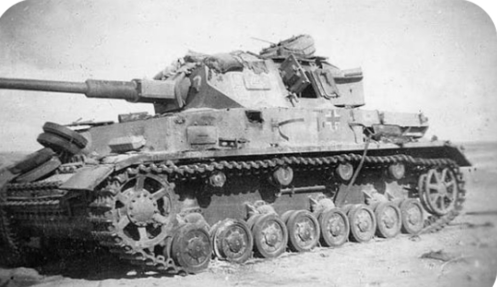
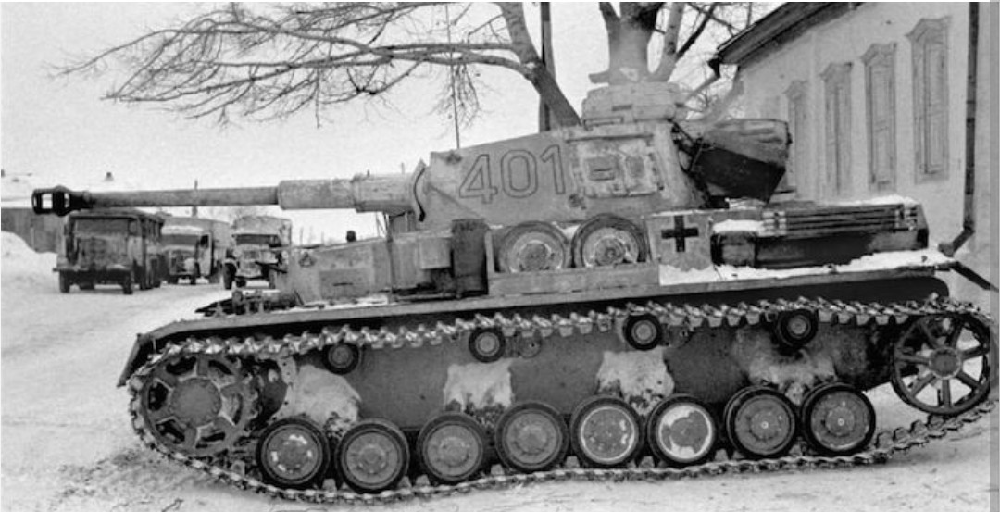
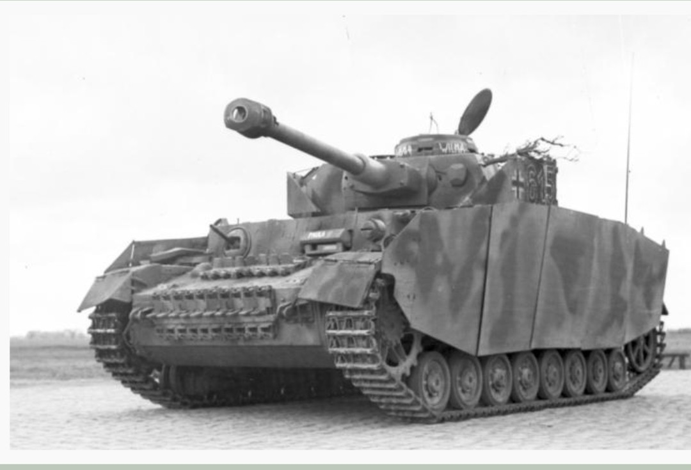
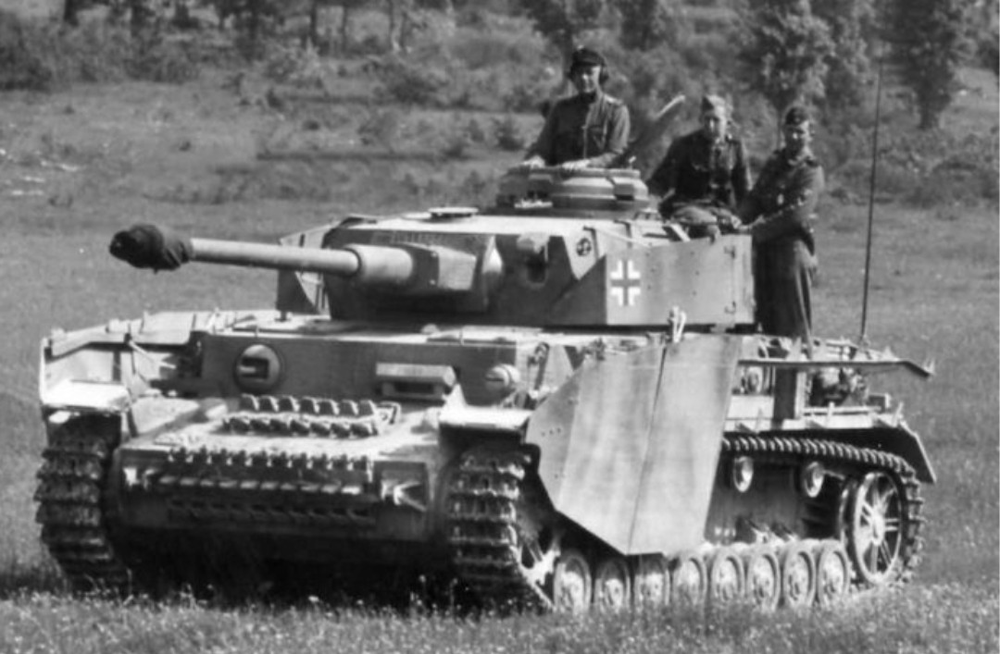

Le Panzer IV est le char moyen allemand le plus produit de la Seconde Guerre mondiale. Conçu d’abord comme char d’appui-feu à canon court, il évolue progressivement en char de bataille principal grâce à l’adoption d’un canon long antichar. Ses dix versions (A à J) illustrent cette transformation.

Première version de série, équipée du canon court de 75 mm KwK 37 L/24. Blindage léger, rôle d’appui-feu pour soutenir l’infanterie.

Amélioration du blindage et de la mécanique. Toujours armé du canon court, utilisé dans les premières campagnes.

Version plus fiable, blindage légèrement renforcé. Toujours orienté vers l’appui-feu.

Engagé en Pologne et en France. Blindage mieux réparti, rôle d’appui-feu conservé.

Blindage frontal renforcé. Toujours équipé du canon court, mais mieux protégé.

Dernière version à canon court. Blindage encore amélioré avant la transition vers le canon long.

Première version équipée du canon long de 75 mm KwK 40 L/43. Le Panzer IV devient un char antichar.

Blindage frontal renforcé, canon long performant. Devient un char de bataille principal.

Version la plus produite. Blindage frontal porté à 80 mm, canon long L/48, ajout fréquent de Schürzen.

Dernière version, simplifiée pour accélérer la production. Fiabilité améliorée, canon long conservé.
Les versions A à F1 représentent le Panzer IV comme char d’appui-feu à canon court. À partir du F2, il devient un char antichar moderne grâce au canon long. Les versions G, H et J sont les plus emblématiques, utilisées massivement jusqu’à la fin de la guerre.
Page du Musée HOP WW2 – Section véhicules allemands